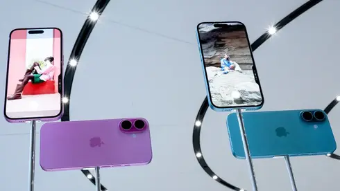
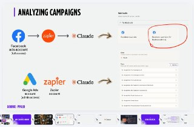

WIREDנמוכה06.05.2026, 00:00
OpenAI’s president wrapped his testimony on Tuesday by revealing a fiery meeting with Musk in 2017 and subsequent efforts to remove several board members.
אימות 1
OpenAI’s president wrapped his testimony on Tuesday by revealing a fiery meeting with Musk in 2017 and subsequent efforts to remove several board members.

Messages presented at trial reveal how Zilis, the mother of four of Musk’s children, acted as an intermediary between him and OpenAI.

אפל תשלם 250 מיליון דולר במסגרת פשרה בתביעה ייצוגית בארה"ב, בטענה שהבטיחה שדרוגי סירי ויכולות AI שלא סופקו בפועל. רוכשי אייפון 16 ודגמים מסוימים של אייפון 15 בין יוני 2024 למרץ 2025 עשויים לקבל עד 95 דולר למכשיר, אף שאפל מכחישה כל wrongdoing.

OpenAI’s cofounder and president revealed in federal court on Monday that he’s one of the largest individual stakeholders in the AI lab.

OpenAI, Google ומיקרוסופט תומכות ביוזמה חדשה בארה"ב לשילוב "אוריינות AI" בבתי הספר, כולל פיתוח חומרי לימוד, הכשרת מורים ועדכון תוכניות לימודים.

OpenAI העלתה ל-Hugging Face את Privacy Filter, כלי קוד פתוח שמזהה ומסיר מידע אישי ורגיש מטקסט לפני שליחתו למערכות AI.

שוחרר תוסף ל-VSCode שמחבר את n8n ליצירת אוטומציות ושרשראות של סוכני AI בלחיצה אחת, כולל המרת workflows לקבצים שמודלי שפה כמו ChatGPT, Claude ו-Gemini יכולים לקרוא ולערוך. המטרה היא לצמצם עבודה ידנית ולהקל גם על משתמשים מתחילים.

הכותב מציג שימוש מעשי ב-AI בארגון: חיבור Claude לנתוני קמפיינים ממומנים דרך Zapier כדי להפיק תובנות, לנסח מסרים ולבנות מודעות במהירות. לטענתו, מהלך כזה יכול לשפר המרות ולהמחיש החזר השקעה ברור בשימוש בכלי AI.

תי עם AI ש״נחשף״ כשעוברים על התמונה עם העכבר ויצא ממש מגניב!

בעדכון האחרון של אפליקציית Apple Support נמצאו כנראה בטעות קבצי `Claude.md`, מה שמרמז שאפל משתמשת בכלי AI של Anthropic לפחות בחלק מעבודת התיעוד או הפיתוח.

ולהמשיך בדיוק מהמקום שבו אתם אוחזים, כשכל ההגדרות והחיבורים שלכם כבר מחכים לכם בפנים. מהלך חשוב של OpenAI במטרה למשוך משתמשים מקלוד קוד. בינה מלאכותית בטלגרם - t.me/AI_tg_il
הפוסט מציג טענת "חינם", אבל בלי אימות ברור מול המוצר הרשמי, ולכן צריך לראות בזה טענה שדורשת בדיקה.

י אחרי זה קלוד פשוט לא עוקב. לא בכוונה, זו ההתנהגות שלו. טיפ: אפשר למקם את הקובץ הזה ב-3 מקומות שונים שיש להם תפקיד שונה: 1. כחוק כללי לכל הפרויקטים מעתה והלאה 2. כחוק לפרויקט ספציפי שמשתפים עם צוות שעובד עם git 3.

פוסט מציג איך שילוב של קלוד אופוס 4.7 ומודל התמונות החדש של GPT שימש ליצירת קרוסלת אינסטגרם על סיפורה של הופ, צ'יטה מהמדבריום בבאר שבע שעברה התעללות באירלנד וכיום מטופלת בישראל.

בוטוקס, איפור ומה לא. מסכן הנסיך הניגרי הוא מאבד כל עוקץ אפשרי הפרומפט שהשתמשתי בו: Create a hairstyle analysis graphic using this portrait.

ר, הוא לא אומר את דעתו והוא בטח לא המילה האחרונה או מקור אמין במאה אחוז. הוא בסך הכל מודל סטטיסטי שמנחש מה הכי מסתבר שתהיה המילה הבאה, וככה הוא עובר מילה מילה (טוקן-טוקן) ובונה לכם תשובה. אז למה שבע?
wn in MS Paint with a mouse. It should be vaguely similar but also not really, kind of matching but also off in a confusing, awkward way, with that low-quality pixel-by-pixel feel that really emphasizes how ridiculously bad it is.

לאבבול מאפשרת לבנות ולעדכן אתרים ואפליקציות ישירות מתוך טלגרם, אחרי חיבור הבוט דרך הגדרות האפליקציות בשירות. משם אפשר לפתוח פרויקט חדש או להמשיך לעבוד על פרויקטים קיימים דרך הצ'אט.

הפוסט מציג טענת "חינם", אבל בלי אימות ברור מול המוצר הרשמי, ולכן צריך לראות בזה טענה שדורשת בדיקה.

לפי הדיווח, בימים הקרובים עשויה להגיע אפליקציית קודקס לאייפון שתאפשר לשלוט מרחוק בקודקס על מק, בדומה לפיצ'ר Remote Control של Claude Code.

הפוסט מציג טענת "חינם", אבל בלי אימות ברור מול המוצר הרשמי, ולכן צריך לראות בזה טענה שדורשת בדיקה.

הפוסט מציג טענת "חינם", אבל בלי אימות ברור מול המוצר הרשמי, ולכן צריך לראות בזה טענה שדורשת בדיקה.
מישהו מציג שדרוגים לסרטים פופולריים בעזרת בינה מלאכותית, עם גרסאות שנראות חדות ומרשימות יותר.

שיאומי פתחה את MiMo V2.5 בקוד פתוח בשתי גרסאות, Pro ורגילה, עם חלון הקשר של מיליון טוקנים.

ביחידת אגוז מתארים כיצד שילוב של פשיטות חשאיות, מארבי צלפים ותחבולה מבצעית הוביל לנפילת בינת ג'ביל והותיר את אנשי חיזבאללה מופתעים ומבודדים.

הפוסט מנוסח בצורה שיווקית ומנופחת. העובדות שכדאי לקחת ממנו הן: אחרי הירי לאמירויות ועומאן, במשמרות המהפכה מאיימים על ספינות בהורמוז - ומזהירים כי כל סטייה מהנתיב שקבעו תיענה ב"תגובה נחרצת".

הניסוח הזהיר יותר הוא: טראמפ הודיע על השהיה זמנית של "פרויקט חירות" לליווי ספינות במצר הורמוז, בטענה להתקדמות משמעותית במגעים עם איראן.

הניסוח הזהיר יותר הוא: שני צעירים נורו למוות ברכב בקלנסווה, ותלמיד בית ספר נפצע אנושות.
שני צעירים נורו למוות בקלנסווה באירוע ירי שהצטרף לגל האלימות בחברה הערבית.

Price compression near $1.42 comes as analysts point to a repeating bull flag structure and thinning liquidity conditions.
הפוסט מציג טענת "חינם", אבל בלי אימות ברור מול המוצר הרשמי, ולכן צריך לראות בזה טענה שדורשת בדיקה.

Solana's Drift Protocol says most of the stolen funds linked to North Korean hackers remain traceable—and it has a plan to make victims whole.

Two papers published this week have reignited debates about the risk posed by “Q-day” to the cryptography that underpins digital assets.
Crypto derivatives have converged with Wall Street. Equity perps could soon prove it. Search / News Harvey made a bold expression of where that convergence leads.
מכבי תל אביב הביסה 0:4 את הפועל פתח תקווה במשחק הבכורה של קני מילר, במשחק חד-צדדי שבו הייתה יכולה לכבוש יותר.

עדכון קצר סביב הצהובים ניסו לשים בצד את פרשת רוני דיילה ורשמו 0:4 קליל על הפועל פ"ת. קני מילר עמד על הקווים: "היו 48 שעות קשות". רוי רביבו: "כשמאמן עוזב זה לא נעים, אבל המשכנו קדימה".

עדכון קצר סביב ה-1:2 הדרמטי על הפועל פ"ת הוריד במעט את מפלס הלחץ בכרמל, אך לא העלים את התחושות הקשות בקרב הנהלת הקבוצה בשל הביקורת מצד הקהל: "כואב לראות שזה התודה למי שהשקיע כסף, זמן ואת
הפוסט מנוסח בצורה שיווקית ומנופחת. העובדות שכדאי לקחת ממנו הן: תסכול במועדון מהיכולת והגישה. מהפכה בהרכב המלאבסים לקראת הפועל ב

כ-50 מאוהדי מכבי חיפה הגיעו לכפר גלים, קיללו את הצוות המקצועי וקטעו את האימון לפני הפועל פ"ת; בכר אמר שהקבוצה לא בורחת מאחריות.